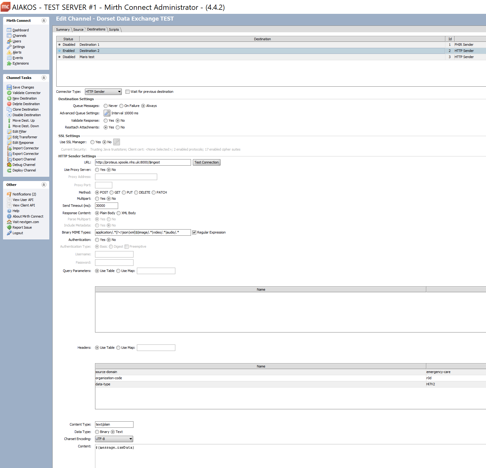
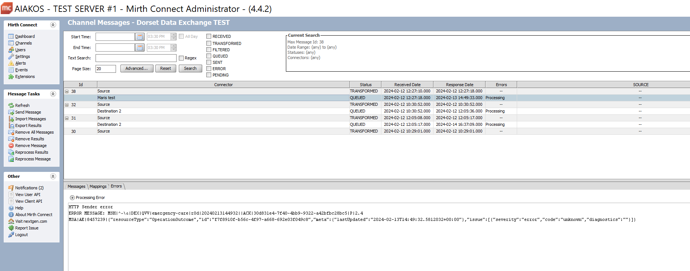

Integration Guide
Connecting to Healthcare Exchange
Healthcare Exchange supports receiving HL7 2.x, HL7 FHIR, and CSV messages via the HTTPS transport protocol.
Healthcare Exchange does not support sending HL7 messages directly to a TCP port.
MLLP is not used. The HL7 message is sent in plaintext and should not be encoded.
The $ingest endpoint is:
{agreed FQDN}{:agreed port}/$ingest
Development environment:
http://localhost:8000/$ingest
Production:
https://{FQDN}/$ingest
Authentication (TBD)
Mutual TLS should be used to guarantee the security and authenticity of both the client (receiving integration engine) and the server (Healthcare Exchange). Certificates will need to be exchanged in advance and deployed using the relevant tool for your environment, typically this is keytool for an integration based on a java virtual machine (JVM) or by adding to the windows certificate store.
Messages are sent in plaintext and are not encoded or encrypted, instead the underlying connection is encrypted and considered to be secure providing mutual TLS is enabled.
Authentication is achieved using OAuth2. The OAuth endpoint will be provided through API management.
How do I implement OAuth2 in my integration engine flow:
The Service Principal will be issued upon successful authentication with the $ingest/auth service (TBD). The Service Principal* is the token which is used for successive requests to the $ingest service.
Authorisation
The Service Principal must be registered before the $ingest endpoint can be used. The following roles/permissions must be allocated to the Service Principal
*Connect as organisation
Send as organisation
Send message category*
The $ingest request
The following variables must be configured to be sent in the HTTP header:
source-domain example: emergency-care
organisation-code example: r0d
data-type example: Hl7v2
The capitalisation of the data-type must match Hl7v2 exactly
The source-domain must exist within Healthcare Exchange, here we specify the emergency-care source-domain.
Organisation codes match those provided by ODS.
The data-type parameter specifies the message type being passed.
A Content-Type of text/plain is required. The charset option is not required, but if used should be set to utf-8.
The following example demonstrates setting up an integration flow using Mirth, but the same principles should apply to any other integration engine.


Viewing logs
Running docker containers:
docker ps -a
Output the tail of the log:
docker logs --follow
Deploying the channel
(Mirth)
In the dashboard view, use filter to find your channel
Right click, choose undeploy channel
Return to the channels view, use filter to find your channel
Right click, choose deploy
Sending a message
(Mirth)
In the dashboard view, double click on the channel
Right click on the message pane
Click Send Message
Paste a HL7 message into the edit control, or generate a suitable message using the generator
Click Process Message
Viewing the response
In the dashboard view
Click on raw or encoded to see the message
Click on sent to see the message and HTTP headers sent
Click on response to view the response
MSH|^~\&|DEX|QVV|emergency-care|r0d|20240213144932||ACK|30d831e4-7f40-4bb9-9322-a42bfbc28bc5|P|2.4
MSA|AE|8457239|{"resourceType":"OperationOutcome","id":"f7f8910f-b56c-4f97-a668-692e03f049c8","meta":{"lastUpdated":"2024-02-13T14:49:32.5812032+00:00"},"issue":[{"severity":"error","code":"unknown","diagnostics":""}]}
Using FHIR to check/retrieve the stored resource
The api documentation can be accessed using swagger. Swagger exposes all direct interfaces and those proxied through the facade to the FHIR server. These interfaces can be used directly via swagger.
https://{agreed FQDN}/swagger/index.html
The following FHIR query should return the stored resource:
Production:
https://{agreed FQDN}/Patient?_id=0000000000